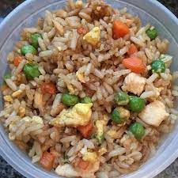

Easy Fried Rice

PHOTO: SHELLEY0112
What Is Fried Rice?
Fried rice is a traditional Chinese preparation of cooked rice, vegetables, protein, soy sauce, and aromatics. The ingredients are stir-fried in a large pan or wok for even flavor distribution. An ideal use for leftovers, fried rice is quick, customizable, and incredibly simple to put together with whatever is in your fridge.
How to Make Fried Rice
Making fried rice is a breeze with the recipe you'll find below. The process is simple — preheat your pan before swirling in oil and aromatics, then add uncooked proteins if applicable. Add in rice and vegetables, vigorously tossing ingredients for that toasty, golden-brown color that signals big flavor.
Ingredients
- ⅔ cup chopped baby carrots
- ½ cup frozen green peas
- 2 tablespoons vegetable oil
- 1 clove garlic, minced, or to taste (Optional)
- 2 large eggs
- 3 cups leftover cooked white rice
- 1 tablespoon soy sauce, or more to taste
- 2 teaspoons sesame oil, or to taste
Steps
- Place carrots in a small saucepan and cover with water. Bring to a low boil and cook for 3 to 5 minutes. Stir in peas, then immediately drain in a colander.
- Heat a wok over high heat. Pour in vegetable oil, then stir in carrots, peas, and garlic; cook for about 30 seconds. Add eggs; stir quickly to scramble eggs with vegetables.
- Stir in cooked rice. Add soy sauce and toss rice to coat. Drizzle with sesame oil and toss again.
Return-Up